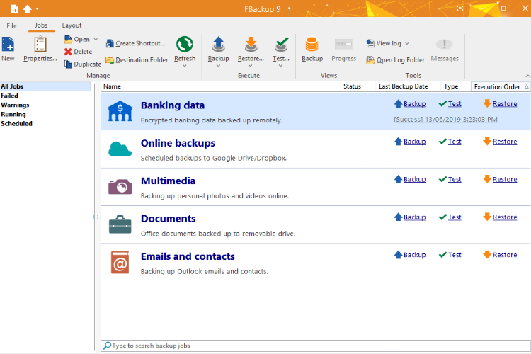

Bonjour , Bienvenue sur mon Portfolio ! Je m'appelle Fourquet Raphaël j'ai 19ans , actuellement étudiant en programmation Web
Télecharger mon CVBaccalauréat Sciences Technologies Management Gestion, Lycée Alexis MonteilRien à voir 2022
BTS Services Informatiques aux Organisations , Lycée Emile Peytavin Mende 2024
Programmation Web
Développement Mobile
Conception Base de données
Gestion de Projet
Travail en équipe
Veille Technologique
Création Jeux Vidéos
FBackup9
- Vérifier les conditions de la continuité d'un service
informatique
- Gérer des Sauvegardes

Outils
FBackup9
ConcreteSecurity
- Mettre en place et vérifier les niveaux d'habilitation
- Vérifier les conditions de la continuité d'un service
informatique
Outils
Php, CodeIgniter, GitHub, MySql, Notion, Visual Studio
Accéder
Bornes Museum Exposition
- Traiter des demandes concernant les applications
Outils
PhpmyAdmin, Adobe Animate, VisualStudio, JS
Accéder
HellsFilms
- Participer à l'évolution d'un site Web exploitant les données de
l'organisation
Outils
Android Studio, Notion, CodeIgniter, Java, MySql
ConcreteSecurity
- Participer à la valorisation de l'image de l'organisation sur les médias
numériques
- Participer à l'évolution d'un site Web exploitant les données de
l'organisation
Outils
Php, CodeIgniter, GitHub, MySql, Notion, Visual Studio
Accéder
ConcreteSecurity
- Analyser les objectifs et les modalités d'organisation d'un
projet
- Planifier les activités
- Evaluer les indicateurs de suivi d'un projet et analyser les
écarts
Outils
Php, CodeIgniter, GitHub, MySql, Notion, Visual Studio
Accéder
Dragon Simulator
- Analyser les objectifs et les modalités d'organisation d'un
projet
Outils
Roblox Studio, Knit FrameWork, GitHub, VisualStudio, Lua,
NodeJs
Accéder
Prodigniter
- Réaliser des tests D'intégration et d'acceptation d'un service
- Déployer un service
Outils
Php, CodeIgniter, MySql, VisualStudio
Accéder
Veille Technologique
- Mettre en oeuvre des outils et stratégies de veille
informationelle
Outils
Google Alerts, Feedly
Accéder
Dragon Simulator
- Développer son projet professionel
Outils
Roblox Studio, Knit FrameWork, GitHub, VisualStudio, Lua,
NodeJs
Accéder
Mooc CNIL
- Mettre en place son environnement d'apprentissage personnel
- Gérer son identité professionelle
Outils
Google, Site Internet CNIL
Accéder
Contacter moi par Mail
raphsiomende@gmail.com